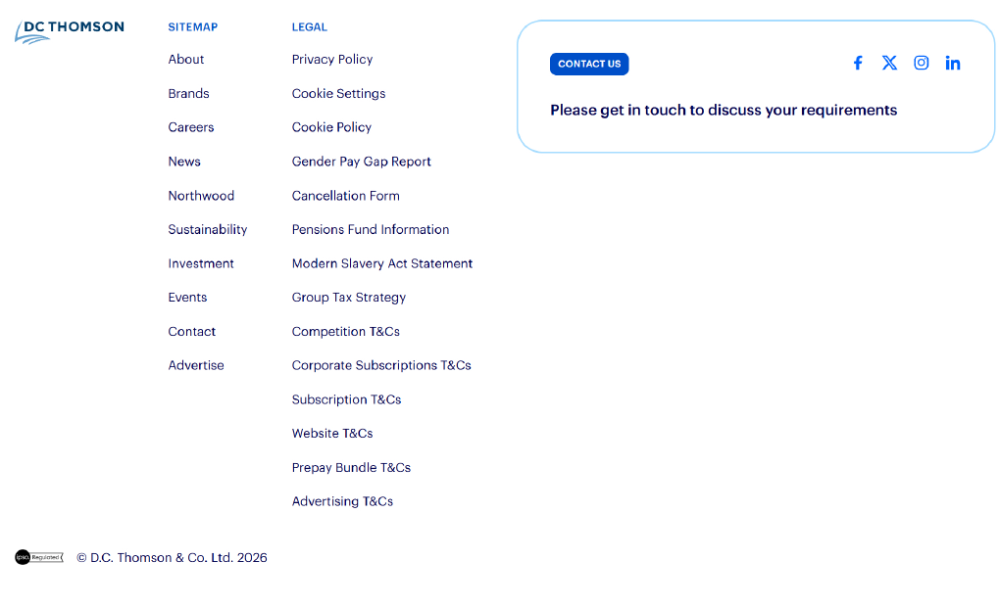
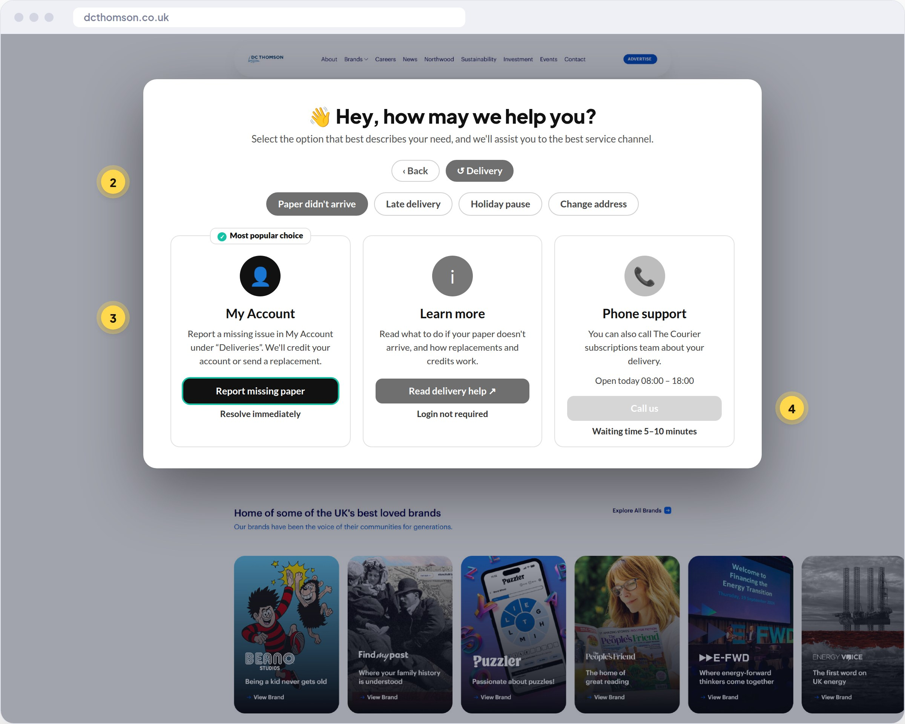
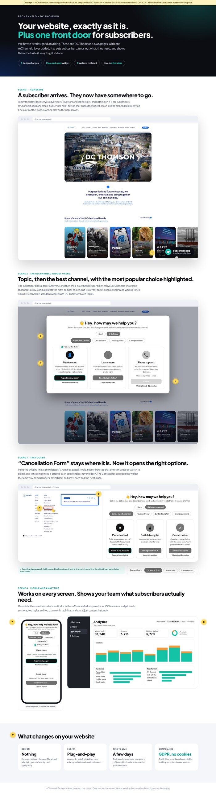

A review of how DC Thomson subscribers find help today, a concept showing reChanneld on your existing website, with nothing redesigned, and an 8-week pilot to prove it on one title.
Your subscribers are loyal. The DC Thomson Shop scores 4.8 out of 5 on Trustpilot, and some of your titles have been part of readers' lives for generations. Growing digital subscriptions is now central to your transformation, and every subscriber you keep counts towards that.
We looked at how a subscriber finds help today, as someone whose Saturday paper didn't arrive or who wants to change how they pay. The help exists: a help centre, My Account, and teams who clearly care. But subscribers aren't guided to it. On dcthomson.co.uk the only subscriber action we could find is a cancellation form. Readers choose between four phone lines with different opening hours, and the same few questions keep coming back.
reChanneld is channel-strategy software from Helsinki. It gives every title one “How can we help?” front door that shows each subscriber the fastest route for their need: self-service, a guide, a form or the right team. It sits on top of the systems you already have.
Rather than describe it, we've done some of the work:
1
Journey review
10 findings and a scorecard of today's subscriber help experience.
2
Concept on your own site
Your real pages, unchanged, with one reChanneld layer added and 9 annotated ideas.
3
Pilot plan
8 weeks on one title, with clear KPIs, so you can decide with your own data.
We'd love 20 minutes with your customer experience or subscriptions lead to walk through it and hear where subscriber help hurts most today.
Kind regards,
Touko Laakkonen
Service Channel Strategy, reChanneld · [e-mail] · [phone]
RECHANNELD · for DC Thomson2
02 · DC Thomson today
A transformation built on subscribers
A family business with a 200-year heritage, now putting money into technology, data and AI to grow digital subscriptions and B2B products.
£41 Msubscription revenue, FY to Mar 2025 (+1%)
50,000+paying subscribers to regional news titles
75,000the earlier digital-subscription target for 2025
4.8/5Trustpilot score for the DC Thomson Shop
Recent milestones
FY 2025Revenue level at ~£134 M like-for-like, pre-tax profit £31 M, advertising +14%.
May 2025Ella Dolphin appointed Deputy CEO, with a focus on M&A and transformation across the portfolio.
2025Air Business renewed on a 3-year contract for subscription management.
May 2026AI narration (BeyondWords × Pugpig) added to the Stylist and Press and Journal apps.
NowRegional news subscribers past 50,000, still short of the 75,000 ambition.
What this means for subscriber help
Keeping subscribers counts as much as winning them. Each frustrated subscriber is a churn risk on the £41 M line.
The portfolio is broad. News, magazines, kids and puzzles each have their own readers, and one set of help rules across all of them would save effort.
You buy focused tools. The AI narration shows you add specialist partners rather than rebuild your platforms. reChanneld fits that pattern.
Your systems are already in place. Air Business, My Account and the help centre stay. What's missing is the guidance layer that connects subscribers to them.
The opportunity: make the help you already have the first thing every subscriber finds.
Sources: dcthomson.co.uk; Press Gazette and Scottish Financial News (FY to 31 Mar 2025 results); DC Thomson news (May 2025); Air Business; BeyondWords/Pugpig (May 2026); Trustpilot. Please tell us if anything has changed.
RECHANNELD · for DC Thomson3
03 · Subscriber journey review
Finding help today: 10 findings
Reviewed as a subscriber with a missing paper or a billing question, 2 October 2026. These scores are our view.
2/10Finding help
3/10Clear contact routes
3/10Self-service signposting
4/10Out-of-hours help
3/10Options at cancellation
9/10Subscriber trust
01
No path for subscribers in the main navigation Critical
The menu serves advertisers, investors, job seekers and partners: About, Brands, Careers, News, Northwood, Sustainability, Investment, Events, Contact and Advertise. There's no “Help” or “My subscription”.
A “Subscriber help” launcher on every page. No change to your navigation is needed.
02
The one subscriber action in the footer is “Cancellation Form” Critical
It sits among the legal links, with no “Manage”, “Pause” or “Report a missing issue” next to it. Cancelling is the easiest subscriber action to find.

Only subscriber action
Keep the link where it is. When it’s clicked, show pause, switch and talk options first, with cancel still one click away.
03
The Contact box is written for business enquiries High
“Please get in touch to discuss your requirements” suits an advertiser. A reader with a missing issue doesn't recognise themselves in it.
When the Contact box is clicked, ask “How can we help?” and route subscribers, advertisers and press separately.
04
Four phone lines, chosen by title and topic High
Courier digital, Press and Journal digital, home delivery and the magazine shop each have their own number. The subscriber has to do the routing.
Ask for the title and topic, then show the right route, and the right number if a call is needed.
RECHANNELD · for DC Thomson4
03 · Subscriber journey review, continued
05
Different hours on each line, and none on Sundays High
News digital lines are open Mon–Fri 8–18 and Sat 9–17. The magazine shop is open Mon–Fri 9–17. A reader who finds a problem on a Sunday evening has nowhere to go.
Self-service options available around the clock, with today's opening hours shown on the phone option.
06
The same questions keep coming back Medium
Despite the 4.8/5 rating, negative reviews cluster around late or missing issues, monthly vs quarterly billing, refunds and early renewal reminders.
Make these the top self-service tasks, available in two clicks.
07
Self-service exists but isn't signposted Medium
There's a help centre and My Account through Air Business, but the corporate homepage doesn't lead to either.
The launcher links straight to the right help-centre article or My Account page.
08
Brand cards lead to brand pages, not to help Medium
A People's Friend or Puzzler reader who clicks their title arrives at the brand story, not at subscriber help.
Add the same launcher to each title’s own site and app. Every brand keeps its design.
09
Cancellation is shown without alternatives Medium
Some subscribers who cancel only want a break, a cheaper option or a problem fixed. From the footer, they're offered only the form.
reChanneld shows pause, switch to digital and talk to us next to cancel. Cancel stays one click away.
10
No wait times before you call Low
Subscribers can't see whether a line is open or busy until they dial.
Show opening hours and the typical waiting time on the phone option, as reChanneld does today.
Before → after
Today: “Cancellation Form” in the legal footer

Concept: same site, plus the reChanneld front door
RECHANNELD · for DC Thomson5
04 · reChanneld on your site

Your website, exactly as it is. Plus one front door.
We haven't redesigned anything. The concept uses screenshots of dcthomson.co.uk as it is today, with one reChanneld layer added. The full page is in reChanneld-DC-Thomson-Help-Concept.pdf, and each yellow number matches a note below.
1
A “Subscriber help” button opens the reChanneld widget. It can also be embedded on a help or contact page. Your homepage stays as it is. Fixes 01 and 07.
2
Topics and sub-topics. “Delivery” → “Paper didn't arrive”, “Late delivery”, “Holiday pause”… built from DC Thomson's own contact reasons. Fixes 06.
3
“Most popular choice”. The recommended channel, here My Account, is highlighted, with “Resolve immediately” underneath. Fixes 07.
4
Phone support, honestly. Today's opening hours, the typical waiting time, and the right number for that title. Fixes 04, 05 and 10.
5
“Cancellation Form” stays where it is. It opens the widget's “Change or cancel” topic: pause, switch to digital, or cancel online as an equal choice. Fixes 02 and 09.
6
The Contact box opens the widget too, so subscribers, advertisers and press each find the right place. Fixes 03.
7
Mobile and title sites. The same widget, with cards stacked on mobile. Separate widget configurations can serve different titles. Fixes 08.
8
reChanneld analytics. Widget loads, sessions, finished sessions, top topics and top channels, in real time.
9
What changes: no design changes, a plug-and-play widget, live in a few days, GDPR compliant with no cookies.
Why no redesign
Your site already looks good and is built for many audiences. reChanneld doesn't compete with it. It adds the missing subscriber path on top, so it can go live in a few days and be tested on one title first. The widget adapts to your site's design and typography.
RECHANNELD · for DC Thomson6
05 · Routing & cancellations
Proposed starting rules
Built from public reviews and contact pages. In a pilot, your own contact data sets the final rules.
Subscriber topic
Route first to
Why
Paper or magazine didn't arrive
Self-service
A recurring complaint. A form plus an automatic credit or replacement takes 2 minutes, 24/7, with no call needed.
Billing date or frequency
My Account
Shows the payment schedule clearly and prevents the monthly vs quarterly surprise behind several complaints.
Holiday pause / address change
Self-service
Simple, high volume and seasonal. It takes the pressure off before summer and Christmas.
App, e-edition or log-in
Guide
Step-by-step instructions by device, with phone as the fallback.
Renewal timing and reminders
My Account
Lets subscribers choose when and how they're reminded, answering the “too early” complaint.
Refund or complaint
Form → team
The form collects every detail up front, so the team can resolve it in one go.
Cancel or downgrade
Options + team
Pause and switch to digital shown next to cancel online, as equal choices. Phone remains available.
Cancellation, done right
UK subscription rules point towards cancellation being as easy as signing up. We agree: blocking cancellation damages trust and invites complaints.
What a front door can do is offer the right alternative at the right moment: a pause for the reader who's going away, a cheaper digital option for one watching costs, and a phone call for one with a problem. Cancel always stays one click away.
How it's managed
Topics and sub-topics mirror how subscribers describe their need
Channel cards per topic, with text, buttons, opening hours and waiting times
“Most popular choice” marks the recommended route
Instant changes in the cloud admin panel, with AI assistance on Pro and Enterprise plans
Several widget configurations, e.g. one per title group
RECHANNELD · for DC Thomson7
06 · Subscriber video
“Sorted in two minutes”: a 45-second help video
New help routes only work if subscribers know about them. A short, friendly video can sit in the help centre, renewal e-mails, the app and title social channels. It's made once, with a version for each title.
0:00–0:06Saturday morning ☕ Doorstep… no paper 📰❓
Visual A reader opens the door: no Courier today.
“Paper didn't turn up? We've all been there.”
0:06–0:16📱 “Help & subscriptions” → The Courier → Missing paper
Visual On her phone: pick the title, pick the topic.
“Just tell us your title and what's wrong.”
0:16–0:26✅ Reported · credit added 1 min 48 s
Visual Done before the kettle boils.
“Sorted in two minutes, any day, any time.”
0:26–0:34⏸️ Pause · 💳 Billing · 📱 App
Visual Quick montage of the other top tasks.
“Holidays, billing, app help: it's all there.”
0:34–0:40☎️ The right team, first time
Visual A friendly agent with an older reader on the phone.
“And when you'd rather talk, we'll put you straight through to the right person.”
0:40–0:45[Title] · Help & subscriptions yourtitle.co.uk/help
Visual End card in the title's own branding.
“Help and subscriptions. We're here for you.”
Formats
16:9 for the help centre, 9:16 for social and the app, a 15-second e-mail cut and a GIF. Captioned for viewing without sound.
Per title, from one master
The same story with different end cards and voice-over lines for The Courier, Press and Journal, People's Friend and more. One production, many versions.
RECHANNELD · for DC Thomson8
07 · 8-week pilot
Prove it on one title, with your own data
The suggested pilot title is The Courier: a high-volume news title with a dedicated subscriptions line.
Weeks 1–2Map
Review three months of contact reasons, agree the topics, channels and wording, and set the baseline. The widget itself can be live within a few days.
Weeks 3–8Guide
The widget runs on The Courier's help pages and links from subscriber e-mails. Wording and recommended channels are adjusted in real time from the analytics.
Week 9Decide
Review the results together, then decide on a rollout to other titles in priority order.
What we'll measure
KPI
How
Calls per 1,000 subscribers
Phone data, before vs during
Top channels chosen per topic
reChanneld analytics
Finished sessions
reChanneld analytics
Missing-issue handling time
Form to resolution
Cancellations converted to pause/switch
Choices in the cancel flow
Subscriber complaints by topic
Your CX data, before vs during
Who does what
reChanneld
Set-up, routing rules and copy
Analytics access and weekly check-ins
Content adjustments and a final report
DC Thomson
One CX contact, about 2 hours a week
Three months of contact-reason data
Adding the front door to The Courier's help pages
No new chatbot, no CRM change, and no change to Air Business. If it doesn't show results in 8 weeks, you stop.
RECHANNELD · for DC Thomson9
About reChanneld
Better choices. Happier customers. Lower costs.
The reChanneld widget as it works today: topic, sub-topic, channel cards and the “Most popular choice”.
reChanneld is a channel strategy platform from Helsinki, Finland. A plug-and-play widget uses behavioural economics and digital nudges to guide customers to the best service channel. Customer service teams manage it themselves in a cloud admin panel, and it works on top of their existing website and channels.
4M+annual sessions
79%channel selections to self-service, automation and leads
87%of end users found reChanneld easy and clear
Daysto define and implement a channel strategy
“Within just a few days we were able to nail our service channel strategy with reChanneld. Nudges work excellently, and we offer a far more intuitive experience to our customers than before!”
Teresa Alander, Head of Operations, Lippu.fi (part of CTS Eventim)
Used by
S-Bank, Nets, Lippu.fi, PAM, Sportson, Laurea, Varha and Satakunta wellbeing services county. They cover banking, payments, ticketing, retail, education and the public sector.
Enterprise-ready
Audited for security and accessibility, GDPR compliant, no cookies. White-labelled to your brand.
Next step
A 20-minute call with your customer experience or subscriptions lead. We'll show a live demo of the widget and admin panel, walk through the concept on your site, and agree whether The Courier is the right pilot title.
Shall we take 20 minutes?
We'd love to hear how subscriber help works today, and where it hurts most.
Touko LaakkonenreChanneld · [e-mail] · [phone]
Figures, quote and customer names from rechanneld.com (October 2026).